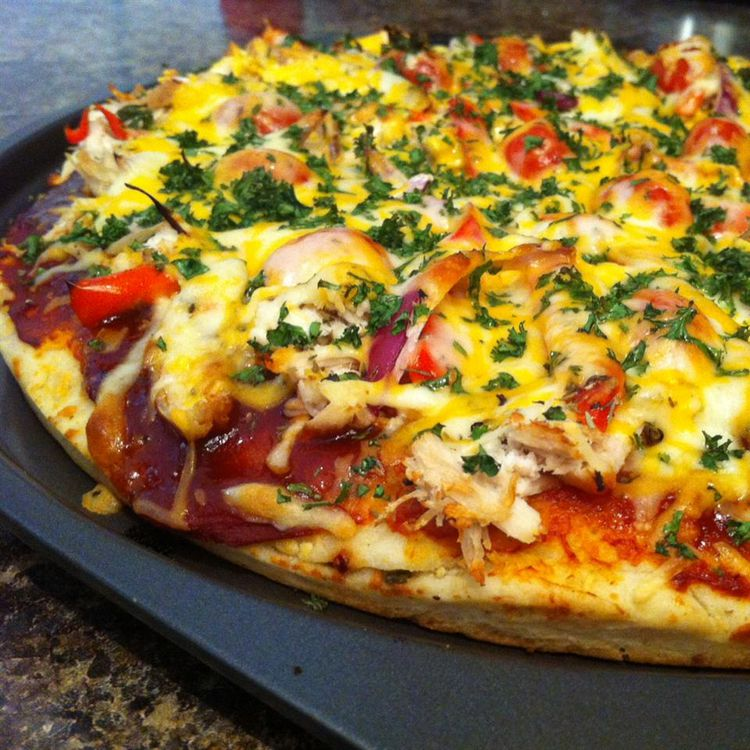

How to Make Barbecue Chicken Pizza

DESCRIPTION
This quick and easy barbecue chicken grilled pizza recipe is for those summer cookouts. I often make it as an appetizer while the ribs are cooking. Use whatever toppings you normally like on regular pizza, but the barbecue chicken is always a crowd-pleaser! The dough never makes a perfect rectangle, but we have fun guessing what it looks like ("That looks like America!"). For the chicken, I use pre-cooked grilled chicken from the store.
IGREDIENTS
- 1 cup chopped cooked chicken
- ½ cup barbecue sauce, divided
- 1 (13.8 ounce) package refrigerated pizza dough
- 2 tablespoons olive oil, or as needed
- 1 cup shredded Colby-Monterey Jack cheese
- 1 cup diced tomatoes, or to taste
DIRECTIONS
- Preheat an outdoor grill for medium heat and lightly oil the grate.
- Combine chicken and 2 tablespoons barbecue sauce in a medium bowl until evenly coated.
- Roll out dough onto a work surface; cut in half to form 2 rectangles. Brush tops of dough with olive oil.
- Place dough, oil-sides down, onto the preheated grill; cook until bottom is browned and top is bubbling up, about 5 minutes. Brush tops of dough with oil; flip.
- Spread remaining barbecue sauce over crusts; top with chicken, cheese, and tomatoes.
- Cover the grill; cook until cheese is melted, 2 to 3 minutes. Cool before slicing, 2 to 3 minutes.
Home